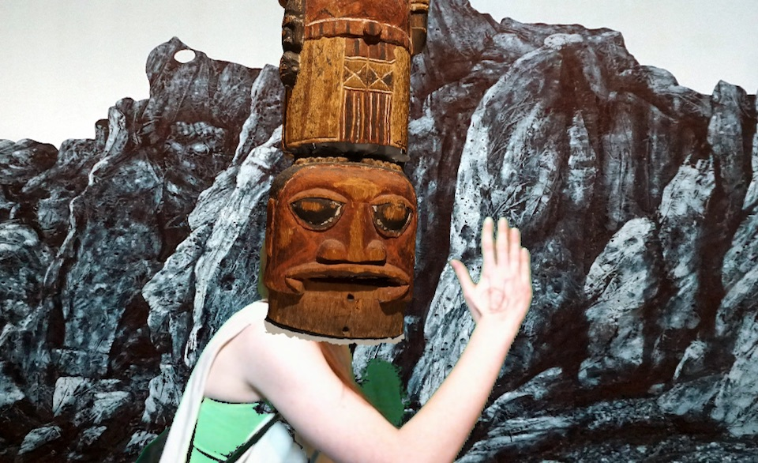
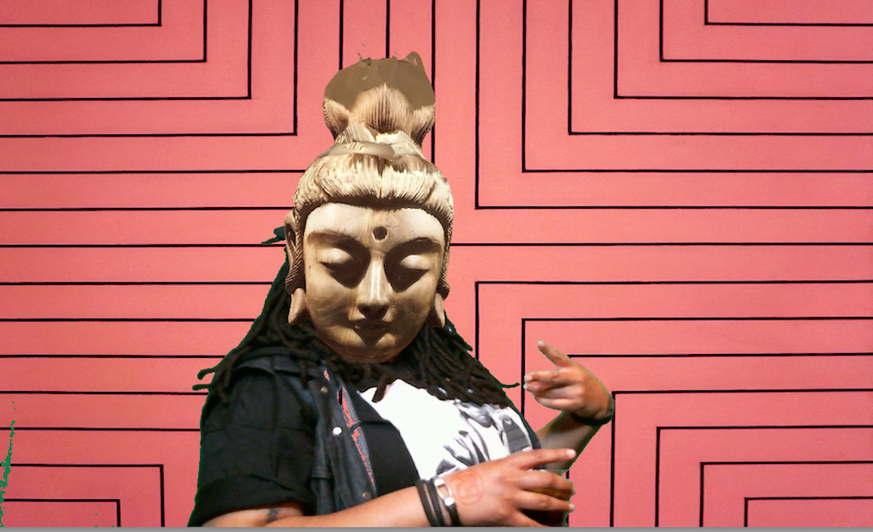

In this live action collage event, guests were prompted to explore a museum and choose paintings and sculptures from the collection for a unique remix experience.
At the #ARTFACE booth, guests chose their favorite works to step inside of. Paintings became backgrounds, and sculptures and portraits became masks. Claire was able to source images of the paintings for the backgrounds, and also 3D-scanned many museum artifcats that we used to create 3D models for the masks!
The goal of this interaction was to encourage guests to explore the works in a collection as potential elements for a personalized remix, and update older works of art by re-inhabiting them digitally. At the end of the live remix experience, guests were given a digital print of their unique work of art, featuring themselves.

The software that ran the #ARTFACE booth was created cutsom specifially for the installation using openFrameworks and several libraries including OpenCV and ofxFaceTracker.